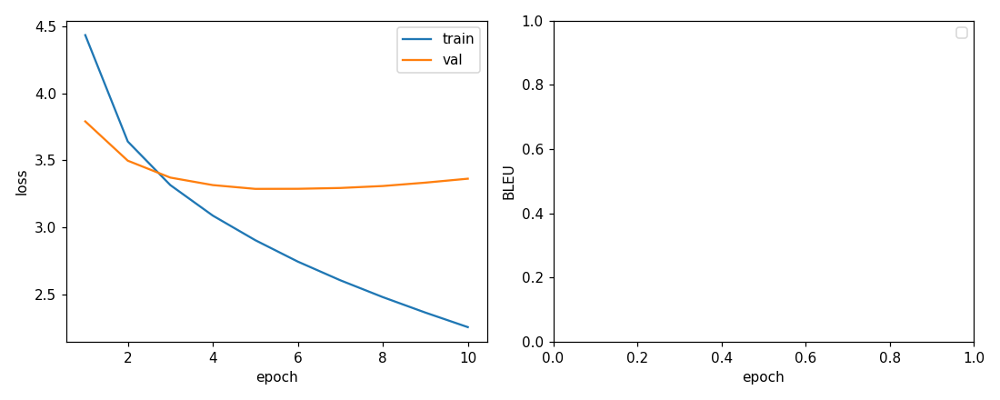
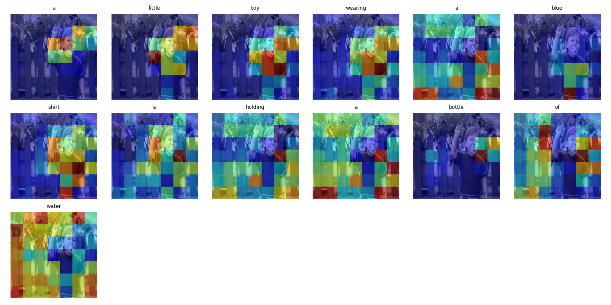

보고서를 불러오는 중입니다…
이미지 캡셔닝은 시각 표현 추출, 문장 생성, 그리고 단어마다 이미지의 어느 부분을 볼지 정렬하는 문제를 한 모델 안에 모두 담는 가장 단순한 과제다.


↓ 아래에 전체 보고서(섹션 1–8), 모든 figure, 아키텍처 다이어그램이 인라인으로 이어집니다.
아래는 영어 학술 보고서 전문입니다. 섹션 라벨과 figure 설명에 한국어 요약을 덧붙였습니다. 기술 본문(영어)은 학술 정확성을 위해 원문 그대로 유지합니다.